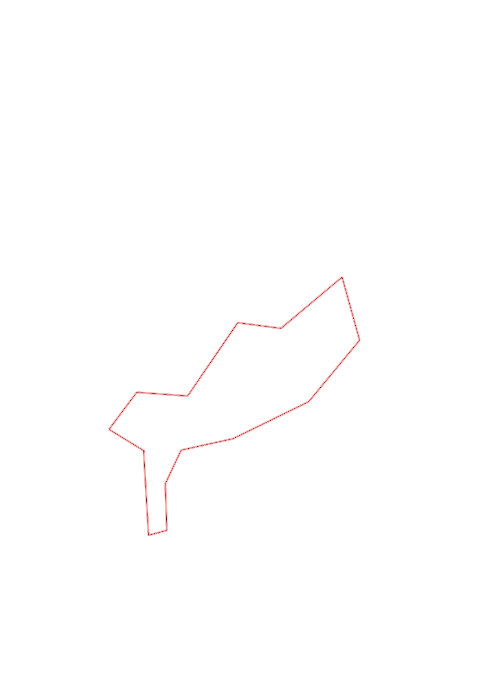
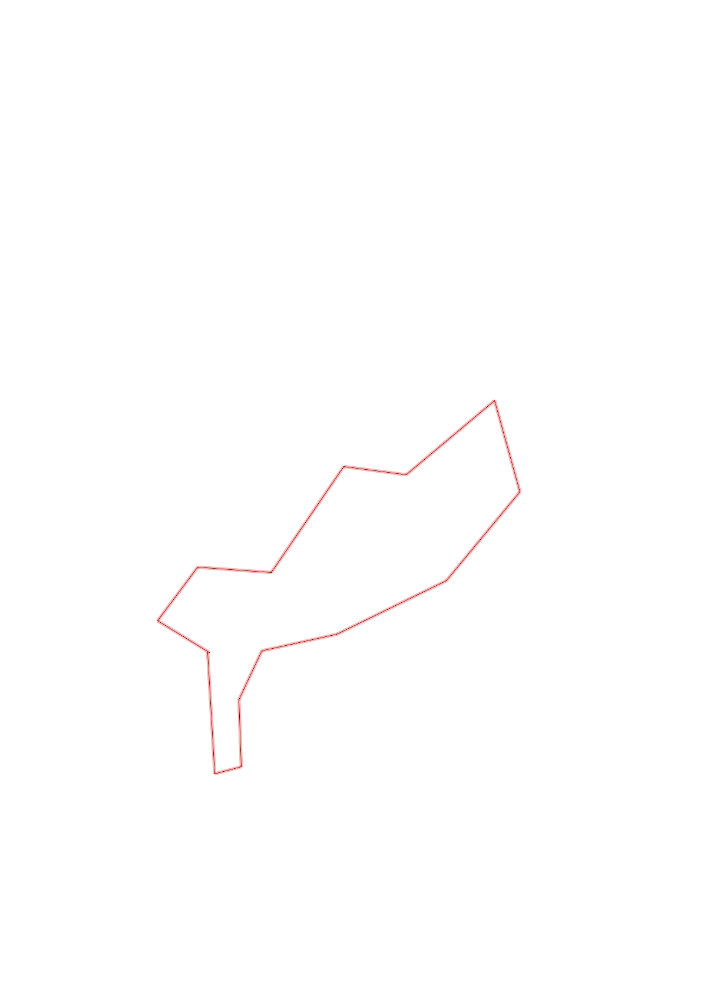

| Control |
Points |
Time Punched |
Distance |
Your Time |
Pace |
Place |
Fastest Time |
Median Time |
% Behind Fastest |
| 31 |
30 |
|
0.54 |
0:04:11 |
07:44 |
1 / 4 |
0:04:11 |
0:04:19 |
0% |
| 42 |
40 |
|
0.12 |
0:01:46 |
14:43 |
4 / 9 |
0:00:52 |
0:01:49 |
103% |
| 37 |
30 |
|
0.3 |
0:02:25 |
08:03 |
1 / 4 |
0:02:25 |
0:02:35 |
0% |
| 63 |
60 |
|
0.24 |
0:03:24 |
14:10 |
3 / 4 |
0:03:00 |
0:03:14 |
13% |
| 80 |
80 |
|
0.34 |
0:08:15 |
24:15 |
4 / 5 |
0:03:33 |
0:03:47 |
132% |
| 60 |
60 |
|
0.54 |
0:04:58 |
09:11 |
3 / 4 |
0:03:54 |
0:04:43 |
27% |
| 81 |
80 |
|
0.52 |
0:04:25 |
08:29 |
5 / 11 |
0:03:21 |
0:04:40 |
31% |
| 46 |
40 |
|
0.42 |
0:04:48 |
11:25 |
4 / 7 |
0:03:46 |
0:04:48 |
27% |
| 59 |
50 |
|
0.52 |
0:03:34 |
06:51 |
1 / 2 |
0:03:34 |
0:03:44 |
0% |
| 36 |
30 |
|
0.28 |
0:02:35 |
09:13 |
1 / 6 |
0:02:35 |
0:03:26 |
0% |
| 41 |
40 |
|
0.57 |
0:10:32 |
18:28 |
4 / 4 |
0:04:05 |
0:09:13 |
157% |
| 51 |
50 |
|
0.33 |
0:03:02 |
09:11 |
1 / 1 |
0:03:02 |
0:03:02 |
0% |
| 35 |
30 |
|
0.3 |
0:02:28 |
08:13 |
4 / 8 |
0:02:08 |
0:02:40 |
15% |
| Finish |
0 |
|
0.27 |
0:01:28 |
05:25 |
4 / 10 |
0:01:23 |
0:01:33 |
6% |
Total Distance Covered: 5.29km
Points Scored: 620
Late Penalty: 0
Final Score: 620
Total Time: 0hours 57minutes 51seconds
Efficiency: 117.2 points/km
 
